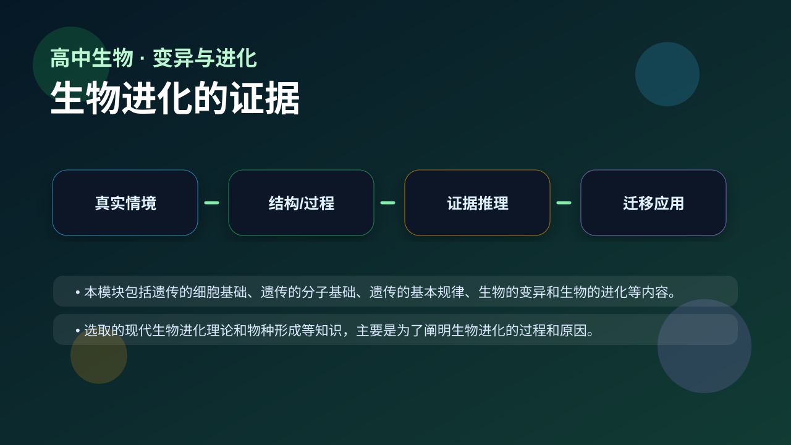
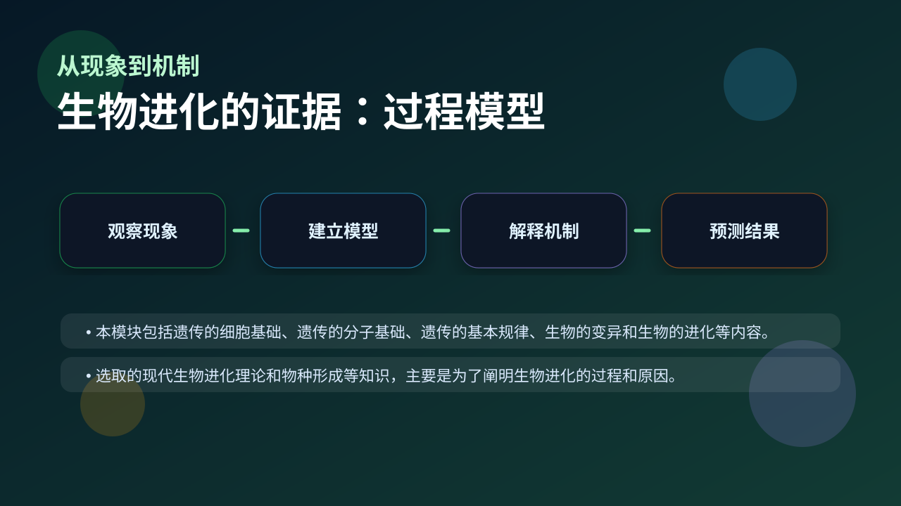
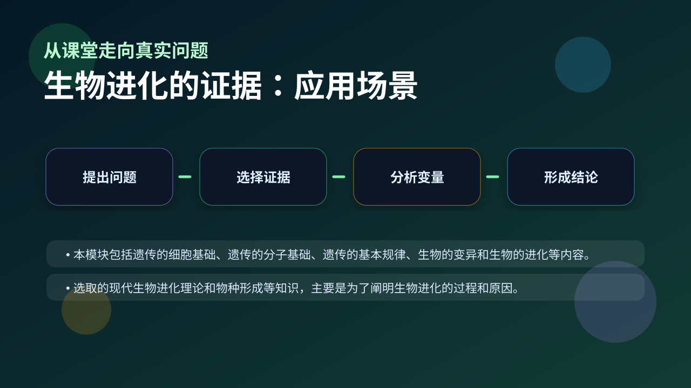

Gallery v1.0.0 · skill v7.14
个体差异怎样在环境选择下变成种群层面的改变？

先选一个卡点。后面的例子、互动和 AI 学伴都会围绕它给你最小提示。
选择或输入后，本课会围绕你的问题展开。
学习 生物进化的证据 前，先判断：一个合格的生物学解释，是否只要说出名词定义就够了？
生物进化的证据 属于“变异与进化”中的关键节点。高考和真实探究不会只问“是什么”，更常问“为什么这样变化”“哪些证据支持这个判断”“条件改变后结果是否还成立”。因此本课用一条主线学习：先描述现象，再建立模型，最后用证据检验。
请注意三组关系：结构与功能、过程与调节、变量与结果。只要能把这三组关系说清楚，生物进化的证据 就不再是孤立记忆点，而会变成解决新情境题的工具。
本模块包括遗传的细胞基础、遗传的分子基础、遗传的基本规律、生物的变异和生物的进化等内容。
选取的现代生物进化理论和物种形成等知识，主要是为了阐明生物进化的过程和原因。

先描述题干现象或数据变化。
区分结构、过程、变量和层级。
用机制说明为什么会这样。
换情境预测结果并给证据。
例题框架：题干给出一个生命现象或实验数据，要求解释与 生物进化的证据 相关的原因。第一步，圈出变量：谁改变了？改变多少？第二步，定位层级：是分子、细胞、个体、种群还是生态系统？第三步，写出机制：这种变化通过什么结构或过程实现？第四步，回到证据：题干哪一条信息支持你的解释？
示范句式：我观察到某个指标发生变化；这说明相关结构或过程被影响；根据 生物进化的证据 的机制，可以推断结果会怎样变化。错误答案常常只写结论，缺少“因为”和证据链。
用 PhET 观察环境压力如何改变种群中不同表型个体的比例，再讨论它和 生物进化的证据 的关系。
💡 操作提示：改变环境、捕食者或突变条件，记录种群数量曲线，判断哪些变化是个体层面，哪些是种群层面。
拖动滑块改变输入变量，观察系统输出如何变化。请把曲线变化翻译成一句生物学解释，而不是只说“变大/变小”。
拖动滑块后，解释变量如何影响结果。
误认为会说名词就会解释。
把分子、细胞、个体和生态层级混在一起。
写结论不写变量、数据或实验现象。
判断题：只要背出 生物进化的证据 的定义，就能解决相关实验探究题。
错因诊断：如果答案只有一个名词，说明你还停留在识记层。真正的理解必须能解释“为什么”、预测“如果条件改变会怎样”，并能指出证据来自哪里。
视频用语音和动态画面回顾本课主线：问题情境 → 机制模型 → 证据判断 → 迁移应用。

请自己设计一个和 生物进化的证据 有关的新情境，可以来自实验、健康、农业、生态或生物技术。你的回答必须包含三句话：第一句描述现象；第二句说明机制；第三句指出变量改变后结果如何变化。若能补充证据来源，就达到高阶分析水平。
提交后会检查你的解释是否包含现象、机制和变量。
如果学生只给出概念名称，教师继续追问三句：你观察到的证据是什么？这个证据对应哪个层级的变化？如果改变一个变量，结果会怎样？这三个问题能把答案从背诵推进到科学解释，也能帮助学生在实验探究题中写出完整因果链。
下面哪一种答案最符合高中生物的科学解释要求？
学习小结：生物进化的证据 的关键不是记住一个孤立词，而是能把生命现象放进层级、机制和证据的框架中解释。下次遇到陌生题，先问：变量是什么？机制在哪里？证据支持哪一步？
本节点的前置、后续和同域知识由标准知识图谱模块自动渲染。